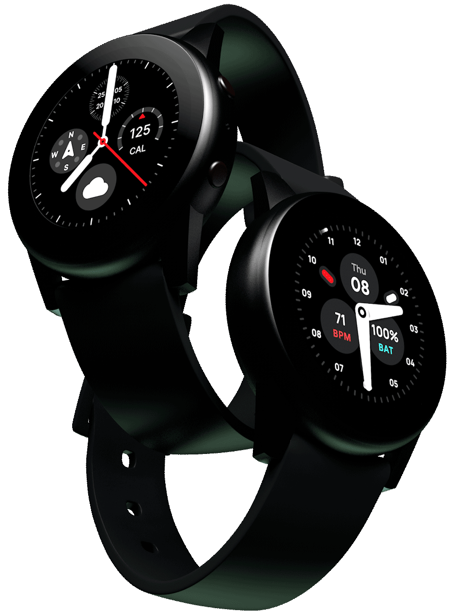
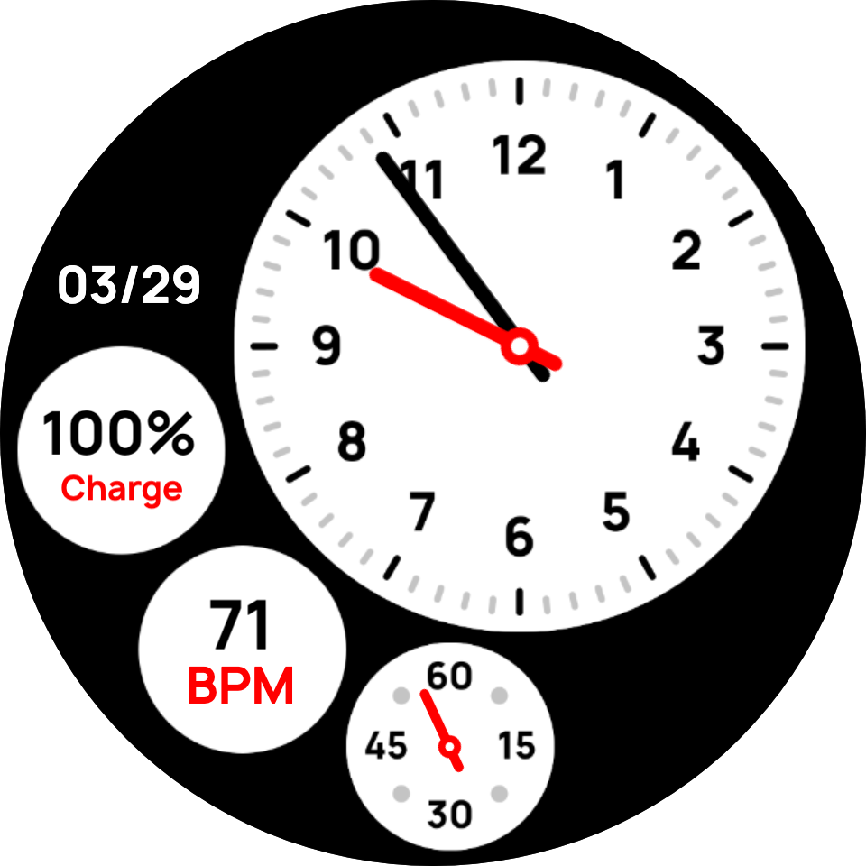
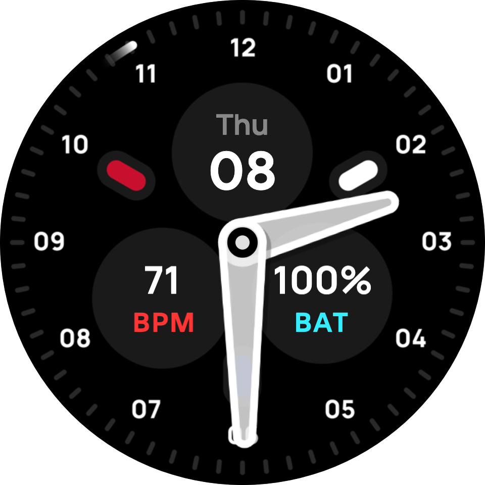
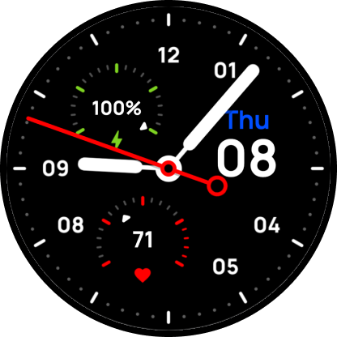
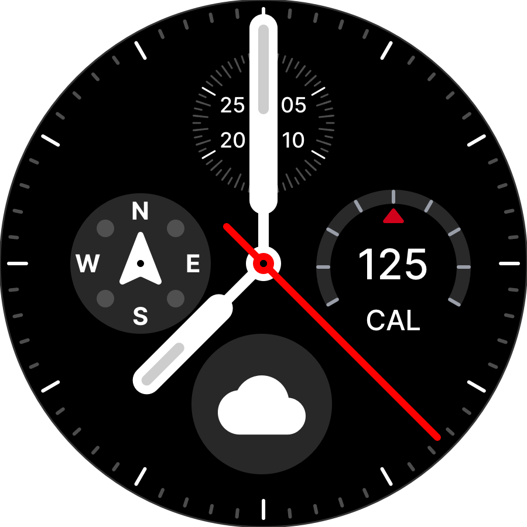
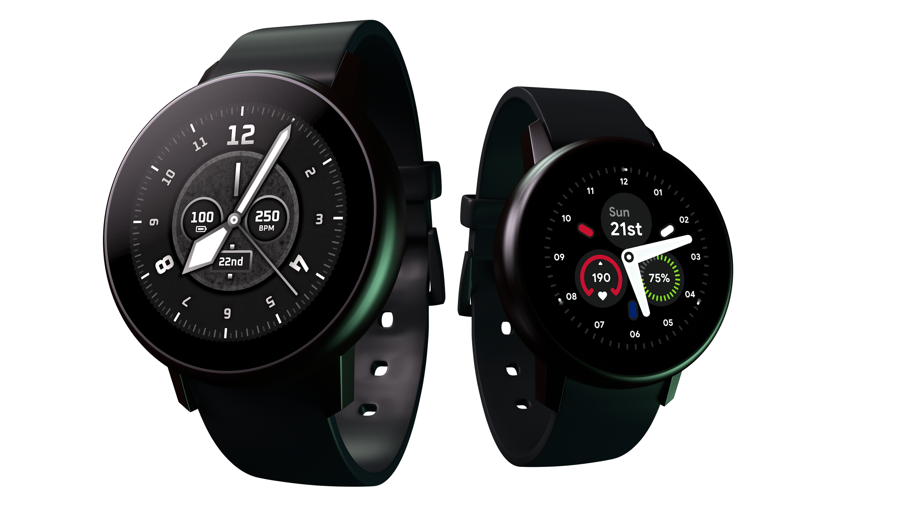
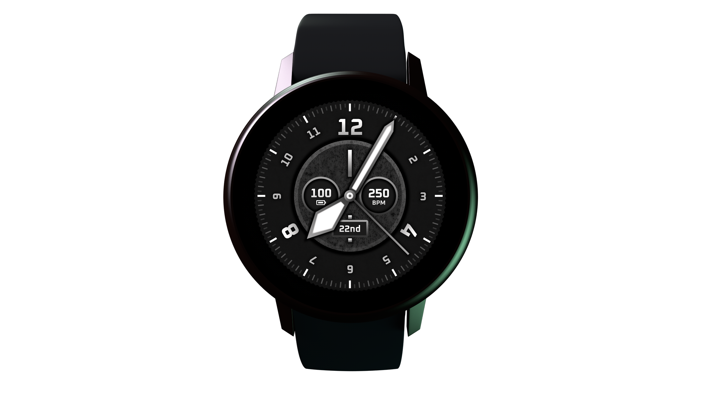
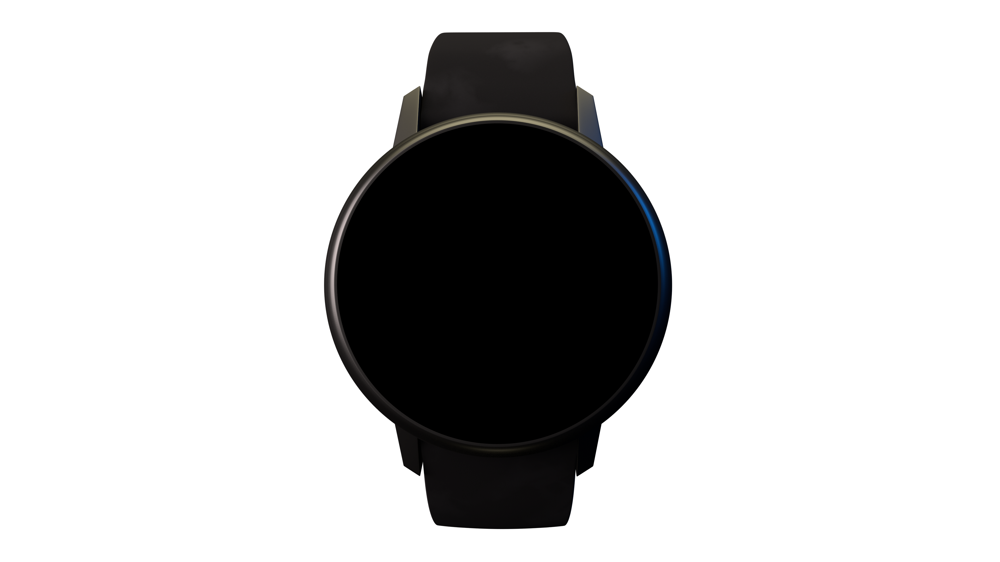

Circular-first design
Round displays need round workflows. Sketch’s rotate copies tool and circular layouts made it possible to build precise, symmetric compositions for wearable screens.
Proudly supporting RNIB
Olympus is proud to donate 100% of the proceeds from the Creators Toolkit to the Royal National Institute of Blind People (RNIB). Your purchase directly supports one of the UK’s leading charities in empowering blind and partially sighted individuals to transform their lives.

Round displays need round workflows. Sketch’s rotate copies tool and circular layouts made it possible to build precise, symmetric compositions for wearable screens.
On AMOLED screens, black pixels draw no power. Olympus faces maximise black space for all-day battery life and strong outdoor visibility when running or training.
Compatible with more than 20 circular-display smartwatches via Facer. Designs draw on Swedish industrial design, German luxury watchmaking, and British heritage.

A vintage dial featuring heartrate, battery, and date complications. It offers nautical, wartime-inspired styling with rich character and high readability tailored for the modern traditionalist.

Clean, minimal, and entirely true to the Olympus brand. This bright white dial keeps things simple, offering a timeless, highly readable design for easy daily wear.

Bold, space-age styling featuring a highly distinct tripolar layout. Battery, heartrate, and date sit among rotating particles that perfectly echo the sweep of a seconds hand.

Designed specifically with sport in mind, utilizing three clear complications within a tripartite layout. It remains modern, highly purposeful, and perfectly readable while on the move.

A core analog layout built for reliable everyday utility. Compass, calorie, and weather complications sit on a clean, high-contrast dial acting as the essential Olympus foundation.

Showcase your custom watch faces in 3D to see them in the best light. Our specialized Creators Toolkit is built specifically for this purpose, offering stunning realism and an immersive experience. It is the ultimate presentation.

The built-in library provides comprehensive, ready-to-use UI complications. Use these pre-made elements as scalable components to rapidly wireframe and lay out your own custom, efficient watch faces with ease. Streamline your entire design process.
Superimpose your designs onto realistic 3D smartwatch mockups like Galaxy Gear. Leverage Sketch’s optimized vector tools and pre-made elements to efficiently create and layout circular interfaces. A perfect workflow for serious designers.
Hyper-realistic Galaxy Watch Active 2 mockups, modelled and rendered for the Creators Toolkit.



